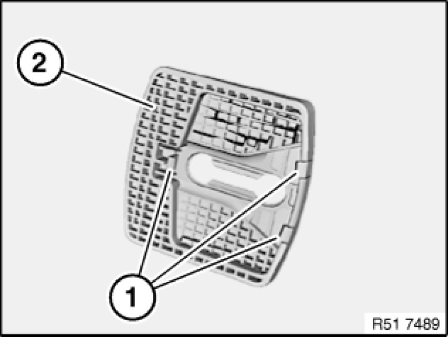

Rear Door Striker: Service and Repair
51 22 001 - Replacing door detent (lock striker), rear left or right

Special tools required:
- 00 9 317 00 9 317 Trim Panel Wedge

Operation up to "cover on rear door detent" is identical to:
Replacing front left or right door detent Service and Repair.
Unclip cover (1) with special tool 00 9 317 00 9 317 Trim Panel Wedge from door detent (2) and remove towards front.

Installation:
Catches (1) on cover (2) must not be damaged.